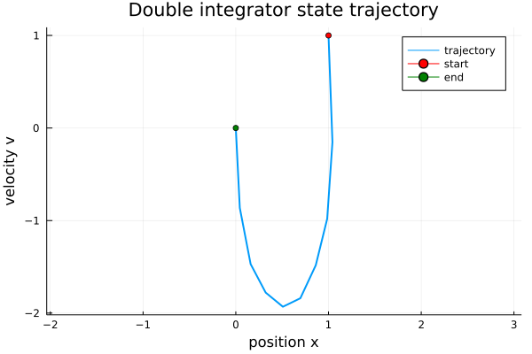
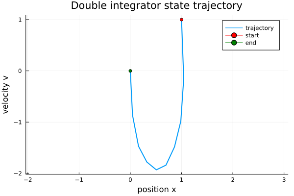

Interfacing To Solvers With Julia
Interfacing To Solvers With Julia
In this repository I provided examples of interfacing to solvers using Convex.jl, MathOptInterface.jl, and OSQP.jl. Additionally, I demonstrate how to provide sparse derivatives, both manually and using ModelingToolkit.jl to generate fast, multi-threaded methods. Each example sets up a simple trajectory optimization problem.